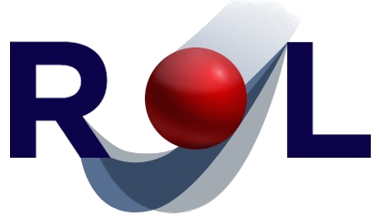

Rapid Optimization Library
Introduction
Rapid Optimization Library (ROL) is a C++ package for large-scale optimization. It is used for the solution of optimal design, optimal control and inverse problems in large-scale engineering applications. Other uses include mesh optimization and image processing.
Overview
ROL aims to combine flexibility, efficiency and robustness. Key features:
- Matrix-free application programming interfaces (APIs) —enable direct use of application data structures and memory spaces, linear solvers, nonlinear solvers and preconditioners.
- State-of-the-art algorithms for unconstrained optimization, constrained optimization and optimization under uncertainty —enable inexact and adaptive function evaluations and iterative linear system solves.
- Special APIs for simulation-based optimization —enable a streamlined embedding into engineering applications, rigorous implementation verification and efficient use.
- Modular interfaces throughout the optimization process —enable custom and user-defined algorithms, stopping criteria, hierarchies of algorithms, and selective use of a variety of tools and components.
For a detailed description of user interfaces and algorithms, see the presentations ROL-Trilinos-xx.x.pptx (or .pdf) in the doc/presentations directory.
To start using ROL, including all its advanced algorithms and features, jump to the Modules page.
For a basic example, see below.
Quick Start
The Rosenbrock example (rol/example/rosenbrock/example_01.cpp) demonstrates the basic use of ROL. It amounts to six steps:
Step 1: Implement linear algebra / vector interface.
— or try one of the provided implementations, such as ROL::StdVector in rol/vector.
Defines the linear algebra or vector space interface.
Step 2: Implement objective function interface.
— or try one of the provided functions, such as ROL::ZOO::Objective_Rosenbrock in rol/zoo.
Provides the interface to evaluate objective functions.
Step 3: Choose optimization algorithm.
— with ROL::ParameterList settings in the variable parlist.
Provides an interface to run optimization algorithms.
Step 4: Run algorithm.
— starting from the initial iterate x, applied to objective function obj.